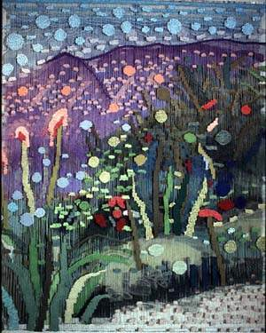

Archive
Artworks
Selected works. Click any artwork to open a much larger view.
Review
On Susan Klebanoff’s Tapestries
Anyone who looks at Susan Klebanoff's tapestries is drawn immediately into an imaginary world. Looking through the layers is like passing through the Looking Glass, a magical and intricate voyage. A stimulation of the senses.
Too seldom seen - anywhere in the art world are such vivacious combinations of joy and wonderment, of choice and movement, ever- improving resolutions: multiple harmonies from multiple statements. In this sense , by presenting three layers of movement, the layers themselves become multiplied. As the viewer moves, or the patterned warps move, the effecting artwork persistently recodes it's material. What this implies for "Art Itself" and artmaking in today's world, the the actual renewable power of invention.
Over the years Klebanoff has worked in this realm- of multiple layered "relief" weaving - experimenting by stages with affects of color, interrelationships, then delving into more "liquid" expression within and between structural parts. Layering techniques on a flat surface are comparable only if one extracts actual movement, suspension, replacement, flex, and real change. In other words, in Klebanoff's extraordinary terms, we discover the invisible as it becomes visible. The density of patterns are woven simultaneously through layers by the use of dyed yarn into solid fabric portions. particles or lines. In combination with other materials such as plastic ribbon, even paint, complex mindscapes appear - villages, cityscapes, rolling hills, rivers- shapes that either wander or fulfill some topographic assignment. There are hierarchies in size, tonality, singularity or placement whose meanings are able to become as widening and inclusive as turnstiles through a partnership with the whole.
With multi-dimensionality as a theme one can expect to meet with surprise. This is an unfolding - in the texture of ambiguity or cross-referentiality ( across boundaries into unknown or undiscovered areas, questioning "ordering principles") that, in Klebanoff's interweavings, set off a vital series of events that differ with each reading, from each point of view, from each shimmer. Susan Klebanoff's work has been shown in embassies, museums, and collections worldwide We welcome her latest achievements to the Washington community
— Carol Dupree